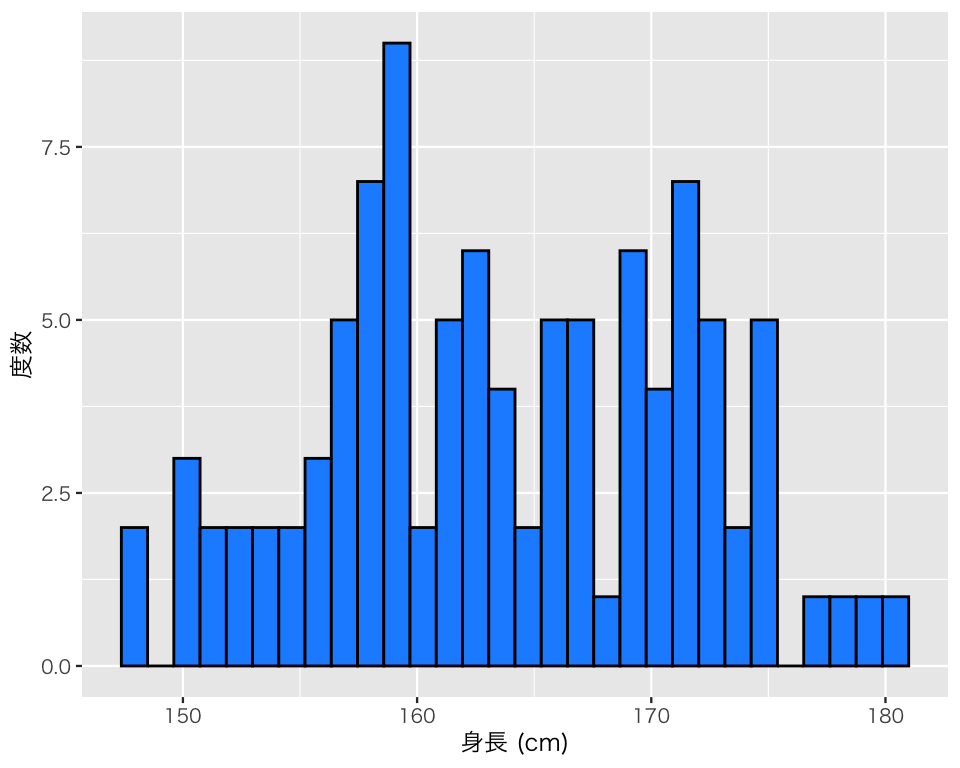
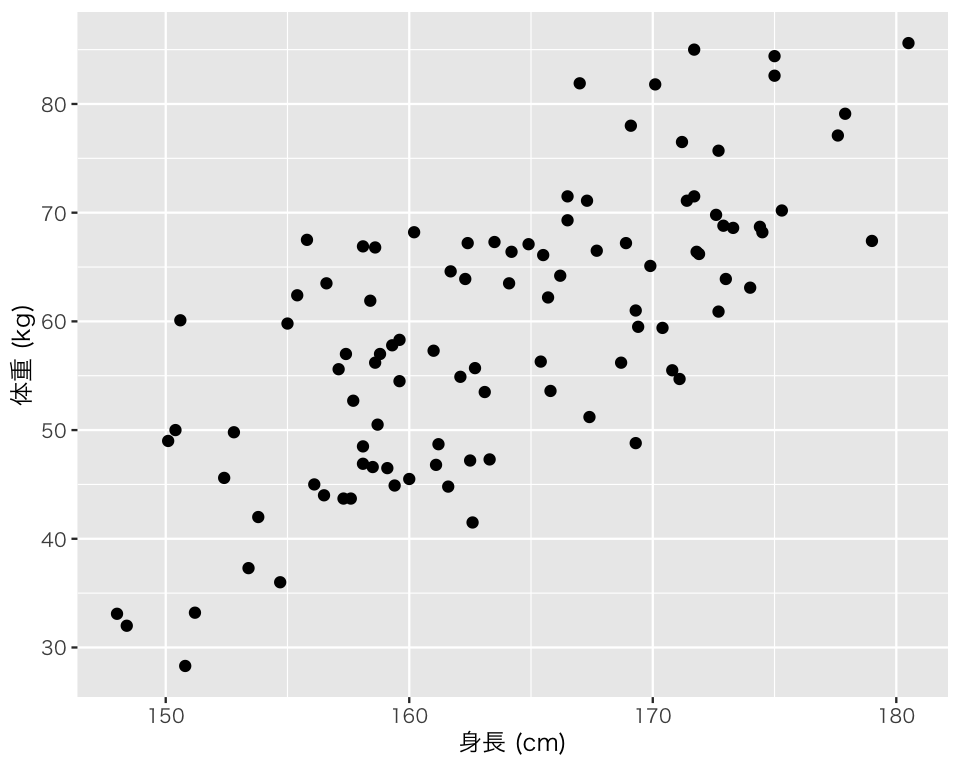
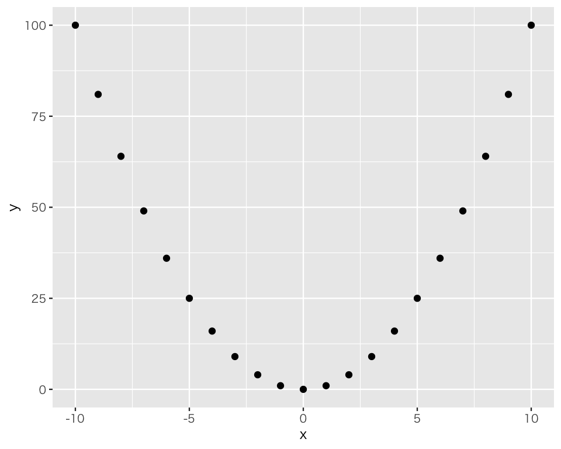

pkgs <- c("tidyverse",
"sytemfonts",
"shiny",
"miniUI",
"DT",
"patchwork",
"remotes")
install.packages(pkgs)
remotes::install_github("Gedevan-Aleksizde/fontregisterer",
upgrade = "never")4 記述統計
今回の目標
- Rで基本的な統計量を求めてみよう！
- Rで作図する例を見てみよう！（今回は、作図コードの内容を理解しなくても良い）
4.1 1変数の記述統計とデータの可視化
4.1.1 パッケージの読み込み
まず、この授業で頻繁に（ほぼ毎回）使う、tidyverseパッケージを使ってみよう。
インストールしよう。既にインストール済みなら再度インストールする必要はない。割と時間がかかるので注意。
重要
この説明は、大学の情報演習室を使うことを想定して書いている。 自分のパソコンを使っている場合は、まず以下の作業が必要である。この作業を大学の情報演習室で行ってはいけない（すべてのパッケージがインストール済みである）。
パッケージの読み込みには、library() を使う。パッケージの読み込みは、R (RStudio) を起動するたびに行う必要がある。つまり、library() はそのパッケージを使う場合には毎回実行する必要がある。また、複数の qmd で同じパッケージを使う場合には、それぞれの qmdファイルにlibrary() でパッケージを読み込む命令を書いておく必要がある（qmd ファイルについては 5章 で説明する）。
図中の日本語が文字化けすることがあるので、OSに合わせてフォントを指定する以下のコードを実行する。 大学のパソコンはWindowsなので、Windows用のコードのみ実行する。
Windows ユーザ（大学PCを含む）は、
library(fontregisterer)
theme_set(theme_gray(base_size = 9,
base_family = "Yu Gothic"))を実行する。
Linux ユーザ（IPAexフォント が利用可能である場合）は、
theme_set(theme_gray(base_size = 9,
base_family = "IPAexGothic"))を実行する。
macOS ユーザは、
theme_set(theme_gray(base_size = 9,
base_family = "HiraginoSans-W3"))を実行する。
備考
利用可能なフォントは、library(fontregisterer) を実行した後（Linuxでは実行しなくて良い）に、自分のOSにあわせて以下のいずれかを実行することで確認できる。
# Linux
systemfonts::system_fonts()$family# macOS
library(fontregisterer)
names(quartzFonts())# Windows
library(fontregisterer)
names(windowsFonts())4.1.2 データセットの読み込み
今回の実習で利用するデータをダウンロードしよう。 準備として、現在利用しているプロジェクト（上で作ったフォルダ）の中に、data という名前のフォルダを作ろう。
dir.create("data")次にデータセット fake_data_01.csv をダウンロードし、今作った data フォルダの中に保存する。
download.file(
url = "https://yukiyanai.github.io/jp/classes/stat1/data/fake_data_01.csv",
destfile = "data/fake_data_01.csv")ダウンロードがうまくいかない（あるいは、次の読み込み段階で失敗する）場合は、ファイル (fake_data_01.csv) をここ から手動でダウンロードして、プロジェクト内の data ディレクトリに移動する。
このデータは CSVと呼ばれる形式で保存されているので、readr::read_csv()という関数を使ってこのデータセットを読み込むことができる（他の形式で保存されたデータの使い方は必要に応じて後の授業で解説する）。
このデータセットを myd という名前で利用することにしよう（これはデータセットのファイル名を変えるのではなく、R上での呼び名を決めているだけである）。
myd <- read_csv("data/fake_data_01.csv")読み込んだデータの中身を確認してみよう。 次のコマンドを打ち込むと、スプレッドシート（Excelの表のようなもの）上にデータが表示される。
View(myd)確認できたら、スプレッドシートが表示されているタブを閉じる。
次に、コンソール上に、データセットの最上部または最下部にある数行分だけを表示してみよう。
head(myd) # 行数を指定しないと6行分# A tibble: 6 × 6
id gender age height weight income
<dbl> <chr> <dbl> <dbl> <dbl> <dbl>
1 1 male 52 174 63.1 3475810
2 2 male 33 175. 70.2 457018
3 3 male 22 175 82.6 1627793
4 4 male 33 170. 81.8 6070642
5 5 male 26 167. 51.2 1083052
6 6 male 37 159. 57.8 2984929tail(myd, n = 8) # 最後の8行分# A tibble: 8 × 6
id gender age height weight income
<dbl> <chr> <dbl> <dbl> <dbl> <dbl>
1 93 female 61 159. 46.5 4025250
2 94 female 60 166. 62.2 6300194
3 95 female 21 165. 56.3 1339138
4 96 female 65 161. 46.8 6127136
5 97 female 45 161. 48.7 1062663
6 98 female 53 166. 64.2 10154200
7 99 female 43 158. 48.5 8287163
8 100 female 48 154. 42 1125390データセットに含まれる変数名を確認したいときは、
names(myd)[1] "id" "gender" "age" "height" "weight" "income"とする。
データセットに含まれる観測数 (\(n\)) と変数の数を知りたいときは、
dim(myd)[1] 100 6とする。最初の数字が\(n\)の数（データセットの行数）、2番目の数字が変数の数（列数）である（RStudio を使うと、右上のウィンドウの”Environment” というタブにこの情報が既に表示されているので、そこで確認してもよい）。
また、データセットの確認には、glimpse() も便利である。
glimpse(myd)Rows: 100
Columns: 6
$ id <dbl> 1, 2, 3, 4, 5, 6, 7, 8, 9, 10, 11, 12, 13, 14, 15, 16, 17, 18, …
$ gender <chr> "male", "male", "male", "male", "male", "male", "male", "male",…
$ age <dbl> 52, 33, 22, 33, 26, 37, 50, 30, 62, 51, 55, 36, 66, 42, 36, 47,…
$ height <dbl> 174.0, 175.3, 175.0, 170.1, 167.4, 159.3, 173.3, 162.5, 160.2, …
$ weight <dbl> 63.1, 70.2, 82.6, 81.8, 51.2, 57.8, 68.6, 47.2, 68.2, 59.4, 66.…
$ income <dbl> 3475810, 457018, 1627793, 6070642, 1083052, 2984929, 1481061, 1…データセットに含まれるすべての変数の基本的な統計量を確認したいときは、
summary(myd) id gender age height
Min. : 1.00 Length:100 Min. :20.00 Min. :148.0
1st Qu.: 25.75 Class :character 1st Qu.:36.00 1st Qu.:158.1
Median : 50.50 Mode :character Median :45.00 Median :162.9
Mean : 50.50 Mean :45.96 Mean :163.7
3rd Qu.: 75.25 3rd Qu.:57.25 3rd Qu.:170.2
Max. :100.00 Max. :70.00 Max. :180.5
weight income
Min. :28.30 Min. : 240184
1st Qu.:48.95 1st Qu.: 1343679
Median :59.95 Median : 2987818
Mean :59.18 Mean : 4343425
3rd Qu.:67.33 3rd Qu.: 6072696
Max. :85.60 Max. :23505035 とする。
4.1.3 基本的な統計量の計算
基本的な統計量の計算方法を学習しよう。Rにはよく使われる統計量を計算するための関数があらかじめ用意されているので、関数を利用する。Rの関数の基本的な形は、関数名() である。この () の中に何を書くべきかは、関数によって異なる。Rの関数の使い方を身につけるためには、() の中身を適切に指定できるようになることが必要である。() の中身は関数の引数（ひきすう; arguments）と呼ばれる。
備考
引数には仮引数 (paramter) と実引数 (argument) という区別があるが、現時点では深入りしないことにする。気になる場合は、この説明 を参照されたい。
私たちが利用しているデータセット myd に含まれる height（身長）という変数 (variable) の平均値（算術平均; mean）を求めよう。Rでは、mean(変数名)とすると、平均値が求められる。
ただし、height という変数は myd というデータの一部（1つの変数, 1つの列）なので、それをRに伝える必要がある。データセットの中身の変数を使うときは、$ マークを使って、データセット名$変数名とすればよい。よって、height の平均値は
mean(myd$height)[1] 163.746である。
次に、身長の中央値 (median) を求めよう。中央値は median() で求められるので、
median(myd$height)[1] 162.9である。
続いて、身長の分散 (variance) を求めよう。分散（より正確には、不偏分散）は、var()で求める。したがって、
var(myd$height)[1] 59.16574である。
今度は、標準偏差 (standard deviation) を求めよう。標準偏差は、sd() で計算できるので、
sd(myd$height)[1] 7.691927である。また、標準偏差は分散の平方根 (square root) なので、sqrt() を使って、
としても、sd() を使った場合と同じ結果が得られる。
次に、範囲 (range)を求めよう。最大値は max()、最小値は min() で求められるので、範囲は
である。range() という関数もあるが、この関数の結果は
range(myd$height)[1] 148.0 180.5となり、区間が表示されるので注意が必要である。
続いて、四分位範囲 (interquartile range; IQR) を求めよう。IQR() を使う。
IQR(myd$height)[1] 12.075ちなみに、第1四分位数すなわち25パーセンタイルは quantile() 関数を使って求めることができる。
(q1 <- quantile(myd$height, prob = 0.25)) 25%
158.1 同様に第3四分位数すなわち75パーセンタイルは、
(q3 <- quantile(myd$height, prob = 0.75)) 75%
170.175 である。第3四分位数から第1四分位数を引くと、
q3 - q1 75%
12.075 となり、先ほどIQR()求めた四分位範囲と一致することが確認できる。
quantile() を使うと、自分の好きなパーセンタイルを求めることができる。 例として、22パーセンタイルと77パーセンタイル、87パーセンタイルを同時に求めてみよう。
これを使えば、身長 height の五数要約 (five-number summary) を表示することができる。次のようにすればよい。
0% 25% 50% 75% 100%
148.000 158.100 162.900 170.175 180.500 五数要約のための関数 fivenum() を使うこともできる。
fivenum(myd$height)[1] 148.00 158.10 162.90 170.25 180.50（一部の結果が四捨五入されていることを除けば）同じ結果が得られた。
課題
- 体重 (weight) について、平均値、中央値、分散、標準偏差、四分位範囲を求めよう。
- 所得 (income) について、平均値、中央値、分散、標準偏差、四分位範囲を求めよう。
4.1.4 変数の可視化
変数の特徴は統計量によってある程度把握することができるが、統計量だけではわかりにくい特徴もある。そこで、データ分析を行う際には、図を作って自分が持っているデータを可視化するという作業が必要かつ重要である。
今日は、ggplot2パッケージを使って、簡単な図をいくつか作ってみよう。ggplot2は先ほど読み込んだ tidyverse の一部なので、新たに読み込む必要はない。また、ggplot2の詳しい使い方は7章」で解説する。 ここではコードの中身まで理解しなくてもよい。
まず、最も基本的かつよく使う図であるヒストグラム (histogram) を作ってみよう。 ggplot2では geom_histogram() でヒストグラムを作ることができる。
例として、身長のヒストグラムを描いてみよう。
hist_h <- ggplot(myd, aes(x = height)) +
geom_histogram(color = "black")
plot(hist_h)これでとりあえずヒストグラムが描ける。
このヒストグラムを元にして、様々なカスタマイズが可能である。例えば、横軸と縦軸のラベル (label) を変えたいときは、次のように labs()を加える。
ビン（ヒストグラムの棒）の色を変えたいときは、geom_histogram() で fill を指定する。 指定可能な色については このページ を参照。
hist_h3 <- ggplot(myd, aes(x = height)) +
geom_histogram(color = "black",
fill = "dodgerblue") +
labs(x = "身長 (cm)",
y = "度数")
plot(hist_h3)
ヒストグラムのビンの幅は、binwidth で指定できる。
hist_h4 <- ggplot(myd, aes(x = height)) +
geom_histogram(color = "black",
fill = "royalblue",
binwidth = 5) +
labs(x = "身長 (cm)",
y = "度数")
plot(hist_h4)
ヒストグラムの縦軸を度数 (frequency, count) ではなく確率密度 (probability density) に変えたいときは、y軸に after_stat(density) を指定する。
hist_h5 <- ggplot(myd, aes(x = height, y = after_stat(density))) +
geom_histogram(color = "black",
fill = "dodgerblue",
binwidth = 5) +
labs(x = "身長 (cm)",
y = "確率密度")
print(hist_h5)
課題
- 体重 (weight) のヒストグラム（色付き）を作り、日本語でラベルを付けよう。
- 所得 (income) のヒストグラム（色付き）を作り、日本語でラベルを付けよう。
4.2 2変数の記述統計とデータの可視化
4.2.1 2つの量的変数の関係を図示する
2つの量的変数の関係は、散布図 (scatter plot) で確認する。ここでは、身長 (height) と体重 (weight) の関係を図示してみよう。ggplot2では、geom_point() で散布図ができる。
scat <- ggplot(myd, aes(x = height, y = weight)) +
geom_point() +
labs(x = "身長 (cm)", y = "体重 (kg)")
plot(scat)
このデータセットに含まれる身長と体重の間には、どのような関係があるだろうか？
4.2.2 2つの量的変数の関係を統計量で示す
2つの量的変数の関係を表すのにもっともよく使われるのは、相関係数 (correlation coefficient) である。この統計量は、\(r\) で表されることが多い。\(-1 \leq r \leq 1\)となる。\(a\)と\(b\) という2つの変数があったとき、\(a\)が大きくなるほど\(b\) も大きくなるという関係があるとき、「\(a\)と\(b\)には正の相関 (positive correlation) がある」と言い、このとき \(r > 0\) である。また、\(a\)が大きくなるほど\(b\) が小さくなるという関係があるとき、「\(a\)と\(b\)には負の相関 (negative correlation) がある」と言い、このとき \(r < 0\) である。\(r = 0\) のとき、「\(a\)と\(b\)に相関関係はない」と言う。
正の相関があるとき、\(r\)が\(1\)に近いほど、その関係は強い。また、負の相関があるとき、\(r\)が\(-1\)に近いほど、その関係は強い。つまり、相関関係は、相関係数の絶対値が1に近いほど強い。
Rで相関係数を求めるときは、cor()を使う。身長と体重の相関係数は、
cor(myd$height, myd$weight)[1] 0.7294207である。この2変数にはどんな関係があるだろうか？
4.2.3 散布図と相関係数
2つの量的な変数の関係を調べるときは、散布図と相関係数の両者を使ったほうがよい。
散布図だけを使うと、本当は存在しない関係を、誤って見つけてしまうことがある。例えば、本当は相関がない2つの変数の散布図を描いたとき、描かれた点がなんとなく右肩上がりの直線の周りに集まっているように見えてしまうことがある。これは、人間がパタンを見つける能力に優れている（優れ過ぎている？）からだと考えられる。偶然できた壁のシミが人間の顔に見えてしまうことがあるというのも似たような現象である。
散布図だけに頼ると、存在しないパタンが見えてしまうことがあるので、散布図で発見したパタンが本当にあるかどうか、相関係数を求めて確かめるべきである。
反対に、相関係数だけに頼るのも危険である。相関係数は、2変数のあらゆる関係を捉えられるわけではない。相関係数が示すのは、2つの変数の直線的な関係だけである。
例として、\(x\) と\(y\) という2つの変数を以下のとおり作り、相関係数を計算してみよう。
x <- -10:10
y <- x ^ 2
cor(x, y)[1] -5.470844e-172変数と\(x\)と\(y\)の相関係数は（ほぼ）0である。相関係数だけに頼ると、2つの変数の間には関係がないと言う結論が出せそうである。しかし、相関係数が低くても、必ず散布図を描いたほうがよい。散布図を作ってみよう。
newd <- tibble(x = x, y = y)
scat2 <- ggplot(newd, aes(x = x, y = y)) +
geom_point()
plot(scat2)
この図を見て、\(x\)と\(y\)は無関係と言えるだろうか？
散布図から明らか（\(y\)をどのように作ったかを思い出せばもっと明らかだが）なように、\(x\)と\(y\)には強い関係がある（\(y\)は\(x\)の関数である）。しかし、その関係は曲線的 なので、直線的な関係しか捉えられない相関係数は、強い関係を見落としてしまうのである。
重要
2つの量的変数の関係を調べるときは、散布図と相関係数の両方を確認する習慣を身につけよう。
2つの変数の関係について調べる方法の詳細については、「統計学2」（3Qに開講）で扱う予定である。